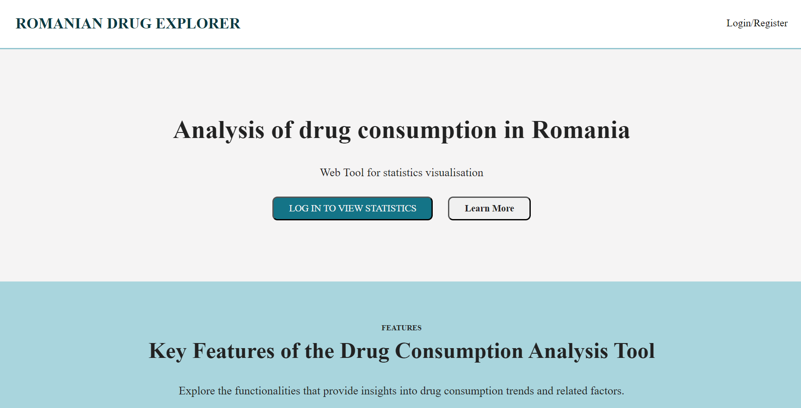

3. Interfaces
3.1 User Interface
Intuitive web interface for data analysis:- Register
- Login
After logging in, an "Edit Profile/Log Out" option will become available
- Home Page
- Admin Home Page
- Edit Profile/Log Out page
- Generate Reports Page
- Pages with Charts
- Pages with Tables
- Page for importing data
- Page for exporting data
- Page for editing existing data
- Page about prevention
- Page that contains information about some drugs

3.2 Hardware Interfaces
- No specific hardware requirements, standard web server infrastructure.3.3 Software Interfaces
- Minimum software requirements include a working HTML5 and JavaScript compatible browser.- A database in which users' information is stored
3.4 Communications Interfaces
The app needs an internet connection. The web communication standard is HTTP/HTTPS4. System Features
Drug Consumption trend analysis Analysis and visualization of drug consumption trends in Romania over the past 3 years. Users will be able to explore and analyze data related to drug use patterns, changes over time, and demographic information.4.1 Correlation analysis with crime rates
Allow users to analyze how drug consumption affects crime rates in Romania.4.2 Correlation analysis with drug confiscations and medical emergencies
The web tool will enable users to explore the drug confiscations as well as medical emergencies related to drug use.4.3 Generate charts and tables based on drug consumption trends
Registered users are able to view different types of charts and tables that are based on the information from the database which can be updated at any time by users that have the Administrator role.4.4 Download the charts/tables generated
If an user is logged in, they can also download the generated charts and tables as ".csv" or ".png".5. Other nonfunctional requirements
5.1 Performance Requierements
Scalability to handle concurrent users5.2 Safety Requierements
Ensure that the data presented is accurate, reliable, and up-to-date. It should also provide appropriate disclaimers and warnings regarding the interpretation of the data and any potential biases or limitations.5.3 Security Requierements
Security measures to protect user data and ensure the confidentiality and integrity of sensitive information. Regularly updating and patching the system to address any security vulnerabilities.5.4 Software Quality Attributes
Usability: Intuitive interface for easy navigationReliability: Minimal downtime and error handling
Maintainability: Modular codebase for easy updates
5.5 Business Rules
Compliance with data privacy regulationsRegular data updates to ensure accuracy